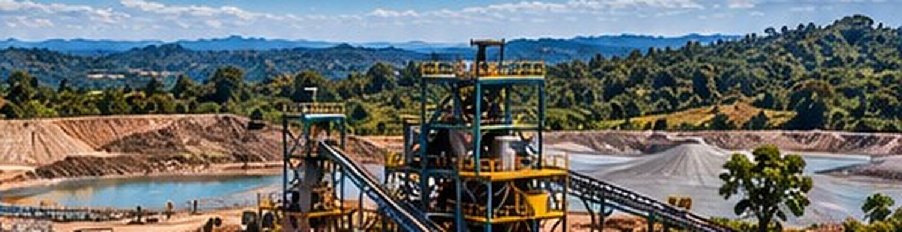
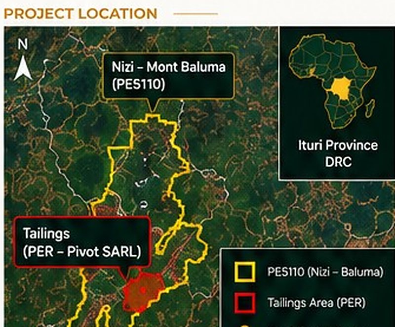
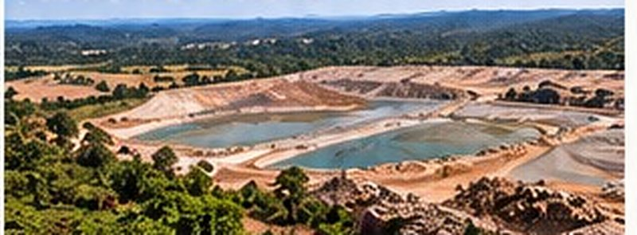
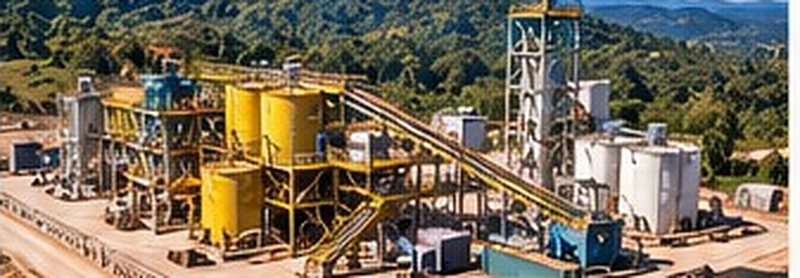
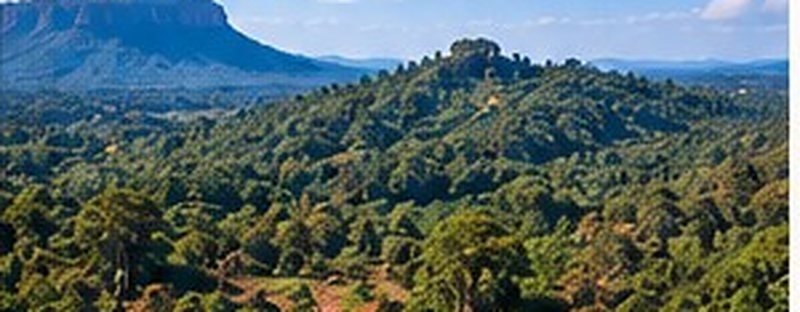

Nizi–Baluma Gold
A gold opportunity through reprocessing of historical tailings, with longer-term potential in the wider Nizi–Mont Baluma project.
- Tailings
- Gold
- CIP processing
- Environmental value
- Long-term potential
Members only. Draft content from the design mock-up. Information is indicative and subject to technical review and agreement. Facts and figures require competent technical review before release.
Tonnage and grade are historical, unverified estimates. Economics and commercial terms are shared only after a confidentiality agreement and remain subject to agreement.
Project overview
The Nizi–Baluma project offers an opportunity to reprocess historical gold tailings, with additional longer-term potential in the wider Nizi–Mont Baluma project area.
Historical studies of the tailings, held under a separate PER, report approximately 1.31 million tonnes (Phase 1B) at an average grade of 1.87 g/t Au. These are historical, unverified estimates.
A 500 t/day CIP processing plant is proposed. The project provides an opportunity for environmental improvement and future development of the underlying mineralised ground (via BALUMA SA, PE5110).
Key highlights
- Historical tailings, approximately 1.31 Mt (Phase 1B, historical estimate)
- Average grade 1.87 g/t Au (historical, unverified)
- 500 t/day CIP processing plant proposed
- Ownership arrangements proposed, subject to agreement
- Environmental benefits through rehabilitation and responsible reprocessing
Project location

Tailings site (example)

- Historical gold tailings from previous operations.
- Potential for reprocessing using CIP.
Proposed processing plant (500 t/day)

- CIP plant concept (mid-tier design).
- Metallurgical test work to confirm recovery.
Wider project potential

- Nizi–Mont Baluma project (BALUMA SA, PE5110).
- Opportunity for further exploration and development.
Next steps
- 1Finalise agreements
- 2Feasibility studies
- 3Permitting and financing
- 4Plant construction and mobilisation
- 5Commissioning and ramp-up
Indicative timeline
An indicative timeline will be added once it has been reviewed and approved.
Partnership opportunity
Nizi–Baluma combines tailings reprocessing with longer-term exploration upside. We welcome discussions with strategic partners.
Information is indicative and subject to technical review and agreement.